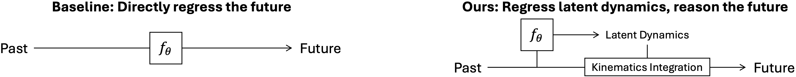
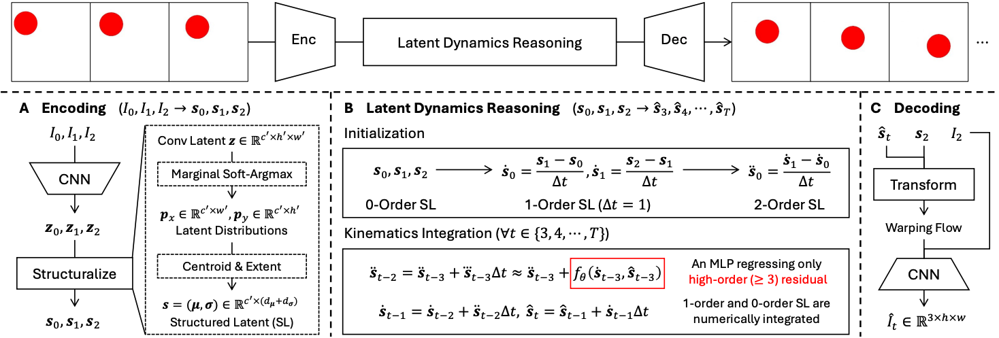
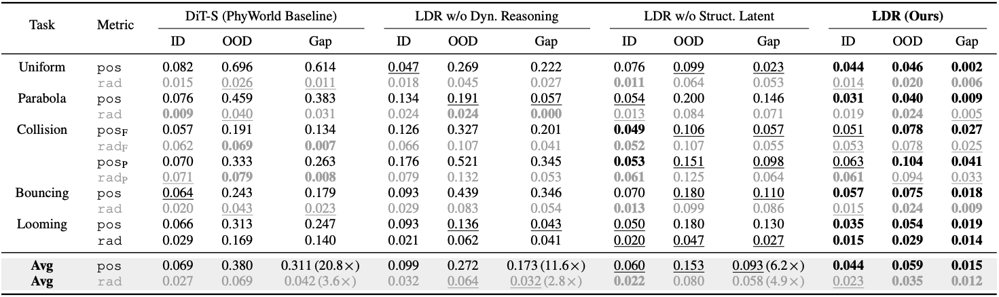
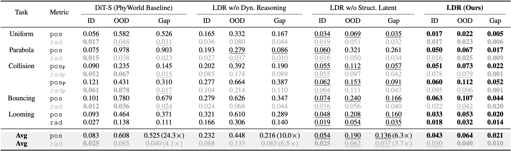
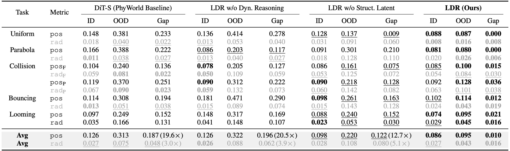
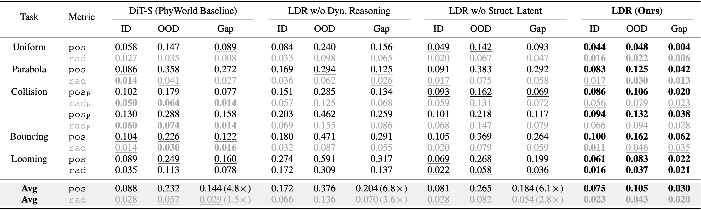
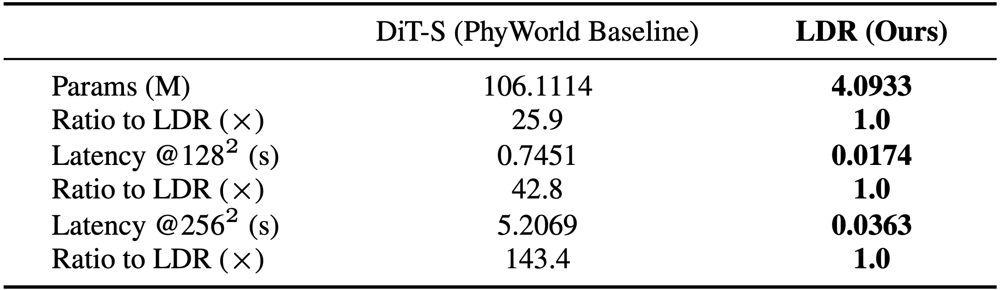

The world evolves following its dynamics, i.e., its laws of motion. However, leading video diffusion models largely fit the pixels without modeling how the pixels transit over time. Thus, they render visually plausible frames but may not accurately obey the laws.

To capture the dynamics purely from pixels, we introduce Latent Dynamics Reasoning (LDR). LDR casts the latent transition as an explicit kinematic integration, where the lower-order dynamics are integrated numerically and the model regresses only the third- and higher-order residual that drives the rollout. For this integration to extrapolate better, LDR runs it on a structured latent rather than dense convolutional features.
Following PhyWorld, we validate LDR on a controlled white-box physics benchmark spanning five tasks (uniform motion, parabola, collision, bouncing, looming), focusing on out-of-distribution scenarios that reveal whether a model has truly learned the underlying dynamics. LDR extrapolates the learned dynamics far better: the gap between its in- and out-of-distribution error is over 20$\times$ smaller than the video diffusion baseline's, under both single- and joint-task training at 256$\times$256 resolution, while using 26$\times$ fewer parameters and running 143$\times$ faster. LDR can even generalize under severe shift: for example, trained only on red balls moving left-to-right, it correctly predicts the motion of a blue square moving right-to-left.
To our knowledge, this is the first video world model that learns the underlying dynamics purely from pixels and extrapolates them beyond the training distribution.

Given three conditioning frames $I_0,I_1,I_2$, LDR predicts the future frames $\hat{I}_3,\hat{I}_4,\dots,\hat{I}_T$ in three stages. (A) LDR first encodes each input frame into a structured latent (SL). (B) LDR measures the low-order time derivatives of the given SL, then rolls out by regressing only the high-order residual with $f_\theta$ and numerically integrating the lower orders to the next latent $\hat{\boldsymbol{s}}_t$ ($t\in\{3,4,\cdots,T\}$). (C) LDR finally decodes each predicted latent $\hat{\boldsymbol{s}}_t$ to an RGB frame $\hat{I}_t$.
Benchmark. For validating LDR, we build a controlled benchmark on the PhyWorld simulator, spanning five physics tasks involving one or two moving balls: uniform motion, parabola, collision, bouncing, and looming. Only samples in an in-distribution (ID) range of initial conditions (e.g., speed, radius) are used for training, while both ID and out-of-distribution (OOD) samples are used for testing. Since the same motion laws hold on both splits, OOD testing effectively evaluates the model's capability in extrapolating the learned underlying dynamics in unseen scenarios.
Training protocols. We train all methods (the video diffusion baseline, LDR, and its ablated variants) from scratch. Single-task training fits one model per task. Joint training fits one model on all five tasks at once, which is a harder setting. Every model conditions on three frames, predicts the next $29$ (i.e., $T=31$).
Metrics.
Because the simulator is white-box and each object in our benchmark is a ball, to directly evaluate the dynamics, we extract each object's center and radius from the predicted frames and compare them against the GT, giving position error (pos) and radius error (rad) on both ID and OOD splits, plus the ID-OOD gap $=\max(0,\text{OOD}{-}\text{ID})$.
Baselines and ablated variants. We compare against the DiT-S baseline of PhyWorld, which represents standard video diffusion models, and two ablations that each remove one LDR component: w/o Dynamics Reasoning replaces the kinematic integration with a direct residual regression of the next latent (i.e., regressing $\boldsymbol{s}_{t+1}-\boldsymbol{s}_{t}$), and w/o Structured Latent runs the same dynamics reasoning but on a dense convolutional latent instead.

We report position (pos) and radius (rad) errors on both ID and OOD splits, extracted from the predicted frames, and the ID-OOD gap: $\max(0,\text{OOD}{-}\text{ID})$.
For collision, we report both full-window (F) and post-collision (P) results.
The Avg rows average results across the five tasks (use only the full-window result for collision), and each competitor's gap is annotated with its ratio to LDR's ($\times$).
Per split, the best number is in bold and the second best is underlined.
Gray rows mark numbers that do not reflect the motion: looming's rad reflects the growing or shrinking motion of the ball, but in the other tasks the ball's radius is physically constant, so rad there reflects primarily rendering fidelity rather than dynamics.
The following three tables use the same organization, metrics, and notations as here.




LDR uses 26$\times$ fewer parameters (4.1M vs. 106.1M) than the DiT-S baseline and runs up to 143$\times$ faster at 256$\times$256. Latency is measured on one NVIDIA A100-80G, under the same inference setting as §3.
Here we present visual comparisons of the DiT-S baseline, LDR, and its ablated variants on OOD samples. Please refresh the website if the error map (below) and RGB predictions (above) are asynchronous.
Trained only on red balls moving left to right, but tested on totally unseen appearances / shapes / motion directions.
@article{xxx,
title={xxx},
author={xxx},
journal={xxx},
year={xxx}
}